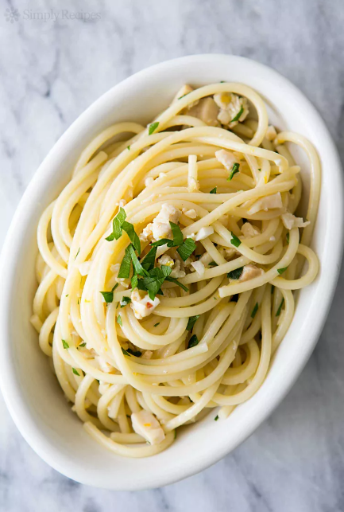

Spaghetti with Clams

Description
This spaghetti and clams recipe is quick and easy, and can be put together with few fresh ingredients which makes it perfect for the days
when you forget to take the frozen meat out before you leave for work. The recipe uses canned clams, boxed spaghetti, white wine, olive oil,
and a few fresh ingredients.
Ingredients
- 8 ounces spaghetti
- kosher salt (to taste)
- 3 tbsp extra virgin olive oil
- 4 cloves of garlic
- red chili pepper flakes
- 2 6oz cans minced clams
- 1/2 cup dry white wine
- 1 tsp lemon zest
- 2 tbsp chopped fresh parsley
- freshly ground black pepper (to taste)
Steps
- Bring a large pot of salted water to a boil (1 tablespoon of salt for every 2 quarts of water). While the water is heating, prep the garlic, lemon zest, and parsley.
- Add the spaghetti to the boiling water, set your timer for 2 minutes less than the recommended time (so you can be assured that you are cooking the pasta al dente).
Cook the spaghetti uncovered in vigorously boiling water. While the spaghetti cooks, prepare the clam sauce.
- Heat 3 Tbsp of olive oil in a sauté pan on medium heat. Add the minced garlic and the red chili pepper flakes. Cook for 30 seconds to a minute, until the garlic just is on the edge of browning.
- Add the white wine to the pan. Open the cans of clams and squeeze out the clam juice from the cans into the pan as well.
Raise the temperature to high and let boil sauce the sauce reduces as the spaghetti cooks. (Put pan on largest burner on high heat to help the sauce reduce more quickly.)
- About the same time the spaghetti is finishing its cooking, the sauce should be reduced by about two-thirds. There should be about 1/4 to 1/3 cup of liquid still in the pan.
Add the chopped clams, and return to a simmer. Then stir in the minced parsley and the lemon zest.
- When the pasta is done to the point of al dente (cooked but still a little firm when you bite), drain it and place it in a serving bowl. Pour the sauce over the spaghetti and toss to combine. Sprinkle with freshly ground black pepper to taste. Serve with a little more fresh parsley sprinkled over the top. Serve immediately.